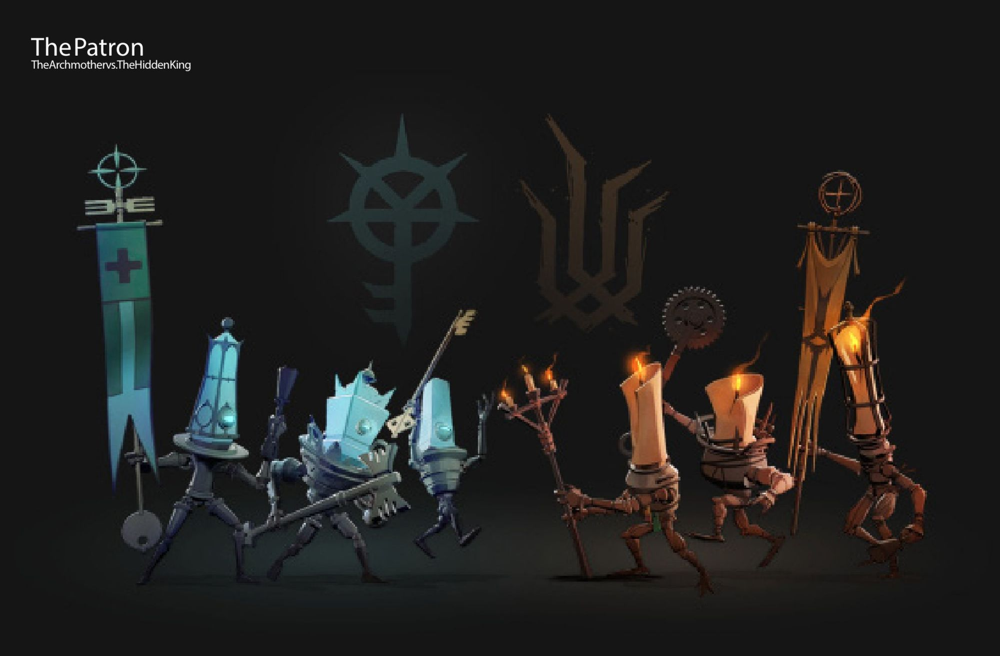
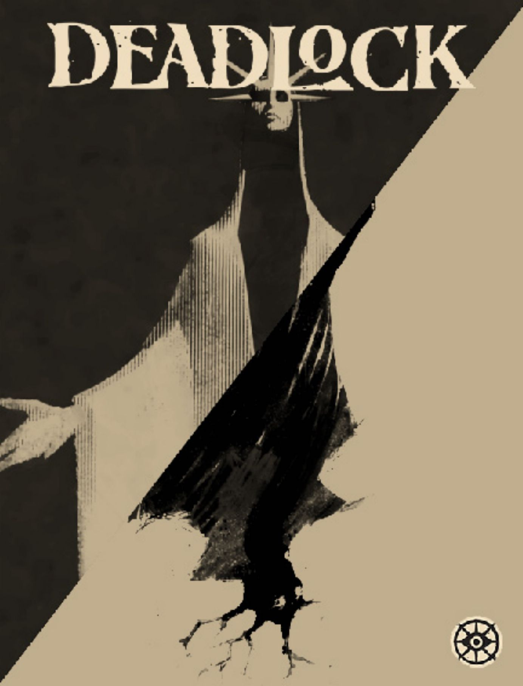
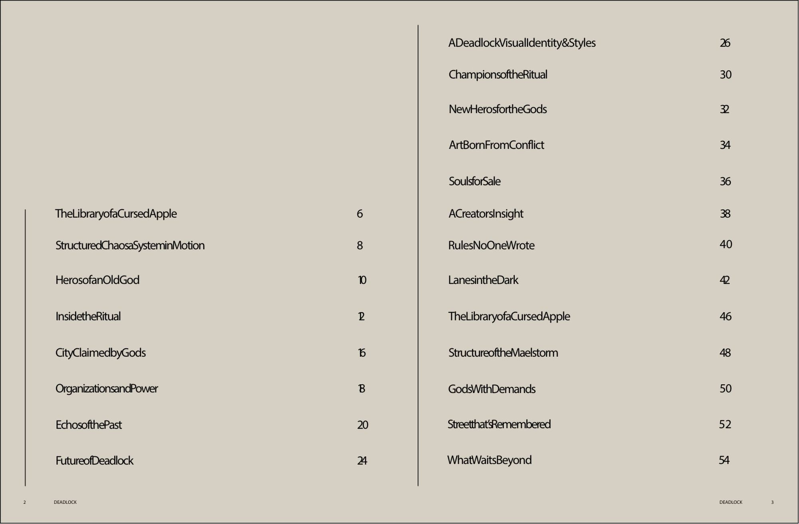
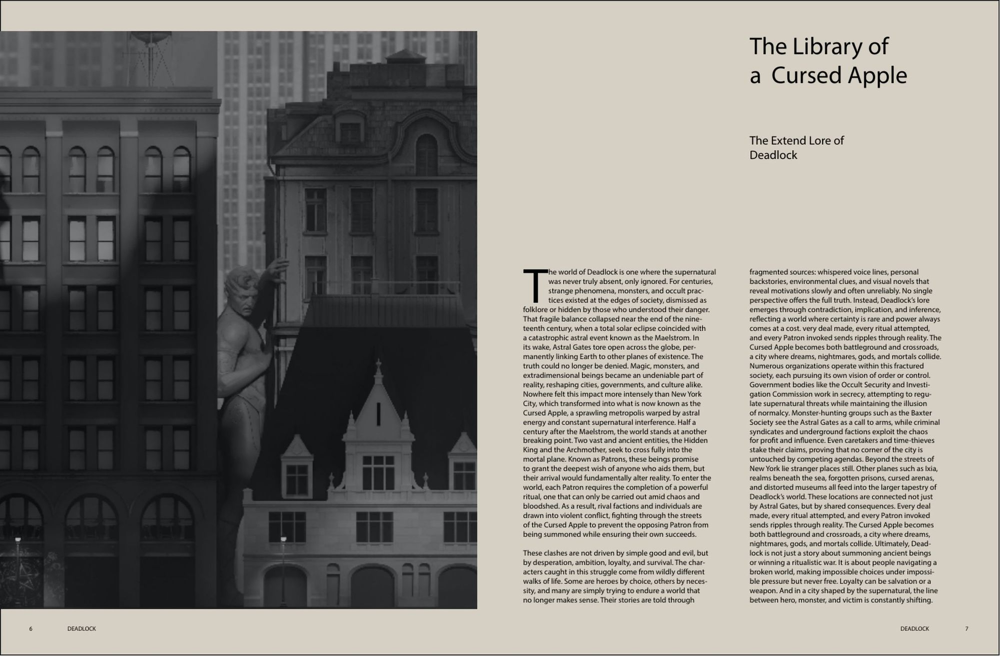
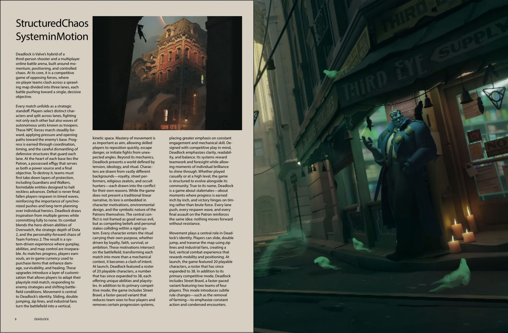
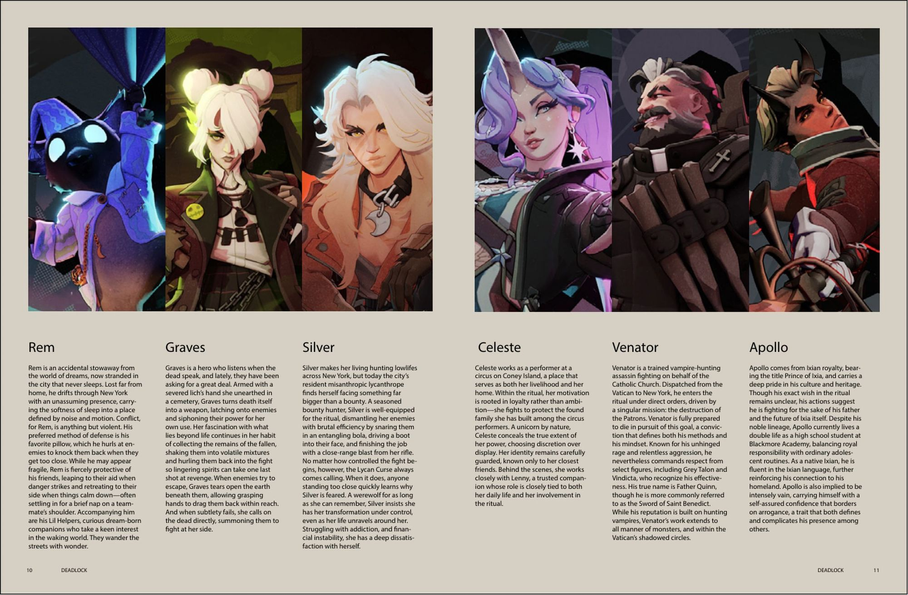
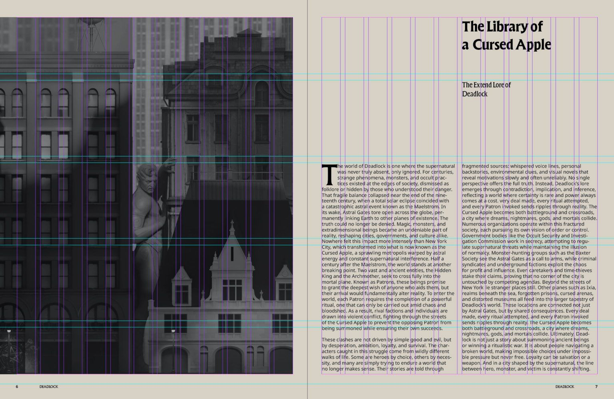
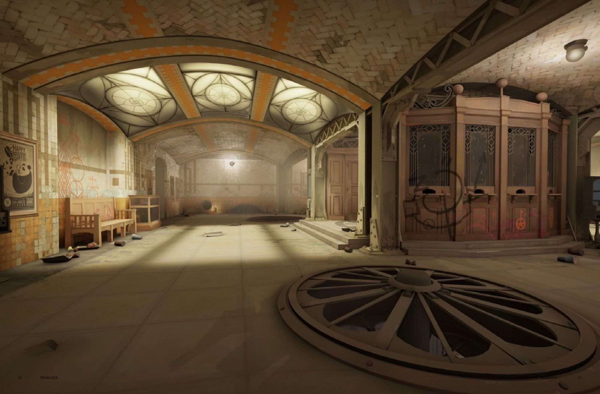

The goal was to translate the game’s established identity into print, creating a project that feels aligned to its world rather than separate from it.

Applications: InDesign, Illustrator, Photoshop

This project explores the visual system of the video game Deadlock through the format of an editorial magazine.
The goal was to translate the game’s established identity into print, creating a project that feels aligned to its world rather than separate from it.

The publication opens with a restrained table of contents, reinforcing hierarchy and typographic structure.


To align closely with the game’s graphical identity, the same typefaces were used in their respective roles. Forevs appears in headlines and standalone moments, prioritizing tone and stylization over pure readability. Noto Sans is used for body copy to ensure clarity and sustained legibility across longer passages.


A 12-column grid system structures the entire publication. This allowed flexibility across spreads working in two, three, or four-column groupings while maintaining balance and consistency. The grid creates rhythm without sacrificing freedom.


This project brings together my background in psychology, typography, and layout design to create a publication that reflects the intensity and controlled chaos of the original source.